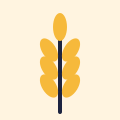

Indonesia’s wheat trade
This dashboard presents the volume of wheat Indonesia imports, the countries that supply it, and Indonesia’s exports of wheat flour and of noodles and other prepared pasta.

Import volumes and supplier countries
Exports of flour and noodles
The charts show the value of Indonesia’s exports of wheat flour (HS 1101) and of noodles and other prepared pasta (HS 190230).

WheatHS code 1001
Wheat flourHS code 1101
Noodles and other prepared pastaHS code 190230
Data quality
Comparison of reported trade: Indonesia and Australia
Indonesia records the wheat it imports from Australia, and Australia records the wheat it exports to Indonesia. The two figures can differ because shipments may leave in one year and arrive in the next, and because countries attribute trade to partner countries in different ways. Differences above 10% are marked “Review”.
Source: UN Comtrade. Difference = (Indonesia’s figure − Australia’s figure) ÷ Australia’s figure.
About the data
- Source
- UN Comtrade, the United Nations database of trade statistics reported by national customs authorities.
- Products
- Wheat and meslin (HS 1001), wheat flour (HS 1101), and noodles and other prepared pasta (HS 190230). HS 190230 includes instant noodles together with other prepared pasta.
- Period
- Calendar years, as reported by each country.
- Measures
- Volume in tonnes. Value in US dollars at current prices, not adjusted for inflation.
- Shares
- Each country’s tonnes divided by the total for all partner countries in that year.
- Limitations
- The most recent year may be incomplete or revised. The charts describe what changed and do not explain why.